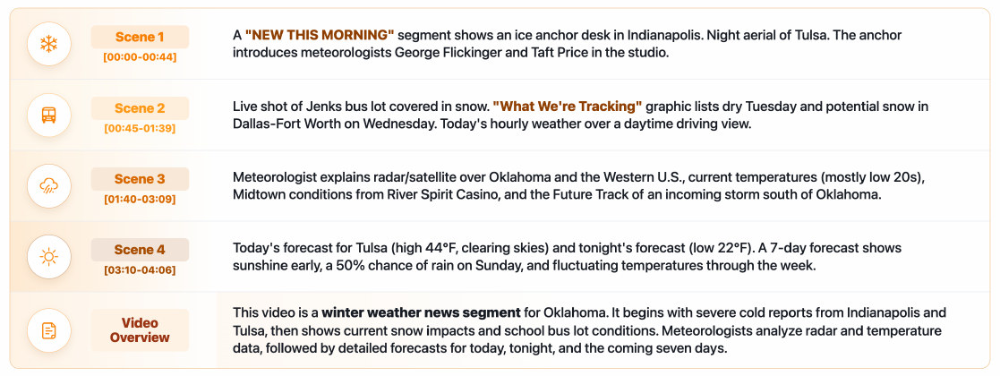
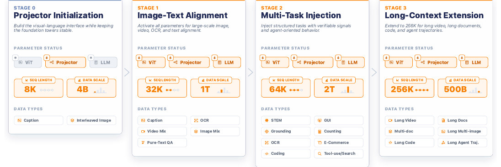
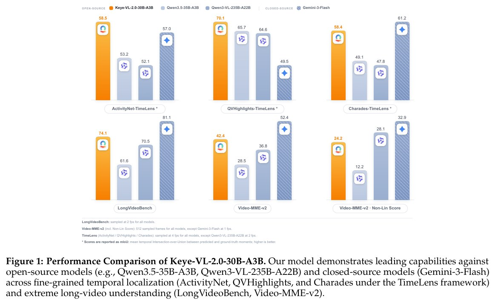

速览
日期取 arXiv v1（2026-06-09）。PDF 首页印的是 June 10, 2026，侧边 arXiv 戳为「v1 · 9 Jun 2026」；本页依据的就是 v1 文本。
五句话看完
DSA 第一次接到 GQA 多模态骨干上
一个 MQA 式 Lightning Indexer（共享 key、ReLU 打分、FP8）为所有 GQA 组选同一组 Top-2048 token，注意力复杂度从 O(L²) 降到 O(Lk)§2.3。先用约 2B 多模态 token 做 dense warm-up 对齐 indexer，再全参稀疏适配§2.3.3。128K 下 prefill 成本降 >3×，decode 降 >5ק5.3。
强项是时间定位和超长视频
TimeLens mIoU：ActivityNet 58.5、QVHighlights 70.1、Charades 58.4，对 Qwen3.5-35B-A3B 为 53.2 / 65.7 / 49.1表 2。LongVideoBench 74.1，Video-MME-v2 ACC（512 帧）42.4，在表 2 中都是第一表 2。
caption 有三级：重写、8B 专家、分场景
Stage 1 对 LAION / DataComp / COYO / CC12M 做 Recaption 与 Remake§3.2。Stage 2 换成 VCap 训练的 8B caption 专家§3.3.1。视频用带起止时间戳的 scene-wise dense caption，外加一段全局概述§3.6 · 图 3。
RL 里有一个「可控编辑找不同」任务
对图 A 施加一组已知编辑得到图 B，模型输出变化区域的框，或者输出编辑操作集 DSL。数据含无编辑的负样本，并加入与差异无关的重渲染扰动，防止模型靠像素相减作弊。reward 全部按规则计算§4.2.1。这一条对编辑数据最有参考价值。
不是全胜，也缺关键消融
Video-MME-v2 Non-Lin（512 帧）24.2，低于 Qwen3-VL-235B 的 28.1；MLVU 82.8、Video-MME 78.3，都低于 Qwen3.5 的 85.6 / 82.5表 2。DSA 对比稠密注意力的精度、MOPD 前后的遗忘程度，原文都没有给出消融数字。
架构：沿用的 ViT + Qwen3 MoE，主要改动在注意力
原文没有架构总览图（图 2 是预训练课程，放在训练配方一节）。下图是按 §2 文字画的示意。原文没说 DSA 覆盖哪些层，所以图里没有画层数。
示意，依据 §2–§2.3 的文字。indexer 头数 HI、DSA 覆盖哪些层、λ 等超参原文未披露。
相对 Keye-VL-1.5 / 常规 VLM 改了什么 §2
- LLM 换成 MoE：Qwen3-30B-A3B-Thinking-2507，30B 总参、3B 激活；论文的出发点是部署效率§1 · §2。
- ViT 直接沿用 Keye-VL-1.5-8B 的视觉编码器；projector 重新随机初始化§2。
- 注意力加 DSA：常见的 DSA 实现基于 MLA，这里接在 GQA 上。作者称这是 GQA 模型做长上下文扩展的一条可行路线§2.3。
- 视频不另配编码器：每帧当一张高分辨率图编码，帧前加自然语言时间戳，把时间锚点放进 LLM 的语言空间§2.2。
自适应视频像素预算 §2.2
先把全局像素预算平均分给各视频，得到基础预算，再按视频时长乘系数：
| 时长阈值 | 256 s | 512 s | 1024 s | 2048 s | >2048 s |
|---|---|---|---|---|---|
| 缩放系数 | 0.125 | 0.25 | 0.5 | 1.0 | 1.0（满预算） |
短而冗余的视频压得更狠，长视频保留更多视觉证据，总 token 成本保持可控§2.2。
DSA 两段训练§2.3.3
① Dense warm-up：主模型保持稠密 GQA，冻结大部分参数，只让 indexer 学习。目标分布是每个 GQA 组内的稠密注意力分数先求和、再在视觉和文本 token 上归一化；损失是对每组求 KL 后再求和。这一段约用 2B 多模态 token。
② Sparse adaptation：解冻全部参数，切到稀疏模式。KL 只在 Top-k 集合 St 上计算，目标分布截断后重新归一化。总损失为 LNTP + λ·Lsparse，indexer 的输入从计算图上 detach，减少梯度干扰。λ 的取值原文未披露。
作者的结论是「在长上下文评测中保留了稠密模型的能力」，但没有给出 dense 与 sparse 的对照数字。
数据：每阶段的类型和总量都给了，配比几乎没给
原文给了每个阶段的 token 总量和数据类型。明确给出的比例只有两处：Stage 3 长短样本 1:1，SFT 中纯文本约占 40%。其余各类数据的占比都原文未披露，所以下面用「已披露规模」表，不画配比柱。
| 环节 | 数据来源与做法 | 已披露规模 |
|---|---|---|
| 视觉编码器 | ||
| ViT 预训练 | DataComp、LAION、CC12M、PD12M、COCO，加高质量内部数据。用 SigLIP loss，对齐 SigLIP-400M-384-14 的 text tower。训练数据分布与下游 MLLM 保持一致，缩小对比学习与下游任务在监督粒度上的差距 | 500B token§2.1 |
| 预训练（四阶段） | ||
| Stage 0 · Projector | 图文 caption（直接语义对齐）+ 图文交错（类文档上下文）；ViT 与 LLM 冻结 | 4B token · 8K图 2；正文未写 token 数 |
| Stage 1 · 通用 | 图文 caption、图文交错、视频交错（每段 15 秒配一条 caption）、纯文本 QA、OCR（艺术字、手写、LaTeX 公式、代码、图表、文档）。开源图文对做 Recaption / Remake，见下文 | 约 1T token · 32K§3.2 |
| Stage 2 · 多任务注入 | 图文：高级 OCR（票据、图表；真实 + XML/模板合成）、Math & STEM（LLM 校验）、caption 精修（8B VCap 专家）、GUI、grounding & counting（实例粘贴合成）、通用 VQA、快手电商、英译中。纯文本：数学 / STEM、代码（修 bug、竞赛）、Hermes 风格工具调用轨迹、search/RAG（单文档 QA、多文档摘要、证据定位、Wiki 知识图谱多跳） | 约 2T token · 64K§3.3 |
| Stage 3 · 长上下文 | 长视频、长文档、多文档、长多图对话、长代码、长 agent 轨迹；长:短 = 1:1 | 500B token · 256K图 2 · §3.4 |
| Mid-training | 保持 Stage 3 设置，加入视频 caption、时序 QA、实体识别、场景理解、因果推理、事件排序、视频计数 | 原文未披露§3.6 |
| DSA warm-up | 多模态数据，用于对齐 indexer | 约 2B token§2.3.3 |
| 后训练 | ||
| SFT | Text NLP、Video、Perception、Reasoning、Agent、Long-context 六类；视频题要求在 <think> 里核验候选片段，并输出证据区间 [[mm, mm], ...] | 约 500B token，纯文本约 40%§4.1 |
| Synthetic CoT | 强 teacher 为高质量 QA 生成推理链，过 query、response、process 三级质检；数学题再用 Doubt2Clean 做第二轮清洗 | Doubt2Clean 覆盖 27 个数据集；样本数未披露§4.1.2 |
| General RL | FineVision、MMK12、MM-Eureka、Thyme、mini o3、Open-R1、自我认知数据、业务数据；做 benchmark 去污染、强模型 / 判官交叉验证、按准确率过滤 | 原文未披露§4.2.2 |
| Video RL | TVG 取自 TimeIT（主要是 DiDeMo、Charades-STA）、时序密集 caption、帧级感知、视频 QA、时序排序、事件计数、FrameForge 合成视频 | 约 31K 条§4.2.4 |
| Agentic RL | Online Judge 与 SWE 容器环境；多轮有状态工具环境；多轮搜索 | 工具环境 150+ 个模拟 API 域§4.2.5 |
视频课程：时长和 token 一起放大
| 预训练阶段 | 最长视频 | 视频 token | 新增内容 |
|---|---|---|---|
| Stage 1 | 15 s | 24K | 短片段做视频-语言对齐 |
| Stage 2 | 15 min | 64K | 提高时长与分辨率；引入时间定位（TVG）数据 |
| Stage 3 | 2 h | 180K | 找稀疏的关键时刻，聚合长程证据 |
来源：表 1、§3.6。TVG 数据参照 ETBench，覆盖 Referred Action Recognition、Video Highlight Detection、Extractive Video Summarization、Temporal Event Matching 四类§3.6。
caption 与合成数据管线

其余数据细节：中文扩充、GUI、纯文本、SFT 混合展开
- 中文扩充：把高质量英文任务数据翻成中文，在原答案约束下重新生成，再做一致性过滤§3.3.1。
- GUI：屏幕截图、控件元数据、交互语义；任务含元素定位、控件识别、页面理解、操作描述、GUI-QA。规模未披露§3.3.1。
- Math & STEM：数学、物理、化学的视觉解题，场景含几何图、函数图像、实验装置、公式、科学图表；用 LLM 校验题目和答案§3.3.1。
- 纯文本保留：作用是缓解多模态训练对语言能力的侵蚀，同时为推理格式、代码、工具调用、基于证据的作答提供先验§3.3.2。
- SFT 混合：长 <think> 数据用于 STEM、计数、视频推理、复杂图文 QA；直答数据用于通用 VQA、caption、OCR、grounding。计数和视频任务的 CoT 写成逐个物体、逐个区间的核验链§4.1.2。此后还有 strong-to-weak 的 on-policy 蒸馏§4.1.2。
- RL 数据过滤：benchmark 去污染会剔除与公开评测样本在视觉或语义上过近的样本；交叉验证时采样多个候选解，由判官选出可靠的正例，作为 ContextRL 的参考解；按准确率过滤，留下既不太简单也不太嘈杂的样本§4.2.2。
训练配方：四阶段预训练 → SFT → 分域 RL → MOPD 合并
学习率、batch、GSPO 的 ε 和组大小 G、MOPD 的 λrep 等超参，原文都没有给。下面只列原文写明的设置。

Projector 初始化
- 可训
- 仅 Projector
- 序列
- 8K
- token
- 4B
通用多模态预训练
- 可训
- 全参
- 序列
- 32K
- token
- ≈1T
多任务能力注入
- 可训
- 全参
- 序列
- 64K
- token
- ≈2T
长上下文扩展
- 可训
- 全参
- 序列
- 256K
- token
- 500B
Stage 0 和 Stage 3 的 token 数只出现在图 2，正文没有写。四段合计约 3.5T推算。DSA 的 warm-up 和 sparse adaptation 放在这四段中的哪一段，原文没有说明。
后训练流程
指令化 + Synthetic CoT
- token
- ≈500B
- 纯文本
- ≈40%
- 长 <think> 与直答数据混合
- 之后做 strong-to-weak on-policy 蒸馏
可验证任务 + GSPO
- reward 模型基于 Qwen2.5-VL-72B-Instruct：格式、结果、过程、ContextRL 四类
- 放大生成 batch 过采样，丢弃 advantage 方差为 0 的组
从 General RL checkpoint 分叉
13 个老师合回一个学生
- 按模态和任务路由到最匹配的老师
- SPRR 对齐 token；top-k 重叠集算 advantage
- 格式 token 降权；重复从崩塌点起罚
示意。原文写明了「SFT 与蒸馏之后做 General RL」「专家与 Video RL 从 General RL checkpoint 出发」「MOPD 汇总 13 个 RL 训练的领域老师」。Synthetic-data RL 和 Agentic RL 的起点 checkpoint 没有写明§4.2。
规则 reward 一览 §4.2.1 · §4.2.3
- Grounding：框统一归一化到 [0, 1000] 并去重；用 IoU 做 Hungarian 一对一匹配。最小 IoU 作门槛，所有目标都达到基本精度才能进入高分区；平均 IoU 提供连续信号；另加重复框惩罚，防止刷框。
- 差异识别：Rperc = λF·Fsoft + λI·Σum/max(|B̂|,|B|) − λD·Ndup。负样本输出为空则奖励，输出了不存在的变化则惩罚。三个 λ 的取值未披露。
- Counting：在格式门控下精确匹配数字。OCR：统一大小写、空白、标点后做文本匹配。Math：符号等价判定，难以规范化的开放解答退回模型判官。Spatial：生成式判官给 {−1, 0, 1}，加格式 reward。
MOPD 的关键设计 §4.2.6
- 为什么要合并：直接混训会互相干扰，例如推理 RL 后回答过短、agent 训练后工具调用格式过多。
- 13 个老师覆盖安全、纯文本数学、指令遵循、代码、视觉 STEM、OCR、grounding、计数、视频、工具使用等。
- top-k 重叠估计：只在老师与学生 top-k 的交集 Ω 上计算 Σ π̄θ(log πT − log πθ)，交集为空时 advantage 记 0，避免在极低概率 token 上比较。
- 系统侧：老师端用自己的 processor 重建序列，校验视觉 token 数、位置编码和多模态边界。作者强调，图像 token 数、抽帧、chat 模板或 mRoPE 任何一处对不齐，KL 信号就会落到错误的 token 上§5.2.2。
Agentic RL 与训练 / 推理基础设施展开
- 共享协议：用 GSPO 优化已完成的轨迹组，reward 按轨迹结果给；未完成的轨迹缓存起来，在后续 rollout 步续跑（colocated partial rollout）§4.2.5。
- Coding RL：OJ 按通过率和 TLE/MLE 等执行失败给分；SWE 按测试套件结果、回归检查和判官核验给分。仓库级任务还可以让多个 reviewer agent 审改动，再由一个 integration agent 汇总后决定是否接受补丁§4.2.5。
- Tool Use RL：reward 看调用是否有效、参数是否一致、环境后置状态，以及判官评估的意图满足度；工具名和参数名随机化，减少对 API schema 的记忆§4.2.5。
- ExtraIO：视频解码与抽帧交给可水平扩展的 I/O 服务，与训练异步解耦§5.1.1。
- ViT–LM 异构并行：ViT 与 LM 放在同一组 GPU 上，各用自己的切分策略；在多模态 token 和 LM 样本两个层级上做负载均衡，端到端吞吐提升约 20%§5.1.1。
- DSA kernel：基于 FlashInfer + TileLang，比改自开源代码的基线快 2× 以上；短序列只遍历因果可见的 KV，端到端快 1.5×；indexer loss 在稀疏注意力的 backward 里一并算出，不必保存每层 T×T 的中间量§5.1.2。
- RL 一致性：用确定性 Top-k（flashinfer.topk 替代 torch.topk，快 2–3×），避免训练和推理选出的 Top-k 不一致§5.2.1。
- 推理：Chunk ViT 分块处理帧；相邻 query 的 Top-k 集合去重，在 128K、topk = 2048 时，16 个相邻 query 只需约 8K 个有效 KV token§5.3。
评测：时间定位最稳，成熟视频基准和部分 agent 项不占优
表 2–4 的对比对象：Qwen3.5-35B-A3B、InternVL3.5-241B-A28B、GPT-5-mini（2025-08-07）、Qwen3-VL-30B-A3B / 32B / 235B-A22B（均为 Thinking）。「–」表示原文没有可比分数。图 1 另外加入了闭源的 Gemini-3-Flash，表 2 中没有它。

时间定位（TimeLens，mIoU）
† Qwen3-VL-235B 的分数直接取自其论文，按 2 FPS 抽帧；Keye、Qwen3.5、Gemini 由作者统一用 4 FPS 测§6.1.2 · 图 1 注。两边协议不同，严格说不可直接比。mIoU = 预测片段与真值片段的平均时间 IoU。
超长视频
LongVideoBench 所有模型按 2 fps 抽帧；Video-MME-v2 统一 512 帧（图 1 中的 Gemini-3-Flash 例外，用 1 fps）图 1 注。Non-Lin 分以 4 道相关题为一组，组得分 = (N/4)²，N 为该组答对数§6.1.1。Non-Lin 上 Keye 低于 Qwen3-VL-235B。
| 基准 | Keye-VL-2.0 30B-A3B | Qwen3.5 35B-A3B | InternVL3.5 241B-A28B | GPT-5-mini 2025-08-07 | Qwen3-VL 30B-A3B Th. | Qwen3-VL 32B Th. | Qwen3-VL 235B-A22B Th. |
|---|---|---|---|---|---|---|---|
| 长视频综合理解 | |||||||
| LongVideoBench | 74.1 | 61.6 | 67.1 | – | – | – | 70.5 |
| Video-MME-v2 ACC（64 / 512 帧） | 35.3 / 42.4 | 32.6 / 28.5 | – | – | – | – | 33.3 / 36.8 |
| Video-MME-v2 Non-Lin（64 / 512 帧） | 18.5 / 24.2 | 15.6 / 12.2 | – | – | – | – | 26.3 / 28.1 |
| MLVU | 82.8 | 85.6 | 78.2 | 83.3 | 78.9 | 82.3 | 83.8 |
| Video-MME（无字幕） | 78.3 | 82.5 | 72.9 | 78.9 | 73.3 | 77.3 | 79.0 |
| 时间定位（TimeLens，mIoU） | |||||||
| ActivityNet-TimeLens | 58.5 | 53.2 | – | – | – | – | 52.1† |
| QVHighlights-TimeLens | 70.1 | 65.7 | – | – | – | – | 64.6† |
| Charades-TimeLens | 58.4 | 49.1 | – | – | – | – | 47.8† |
| 视频知识获取 | |||||||
| Video-MMMU | 80.0 | 80.4 | – | 82.5 | 75.0 | 79.0 | 80.0 |
来源：表 2。列顺序按 PDF 版面还原：Video-MMMU 一行正文写「80.0 追平开源强基线、接近闭源 GPT-5-mini」，与 Qwen3-VL-235B 列 80.0、GPT-5-mini 列 82.5 对得上。
代码与工具（表 3 / 表 4）
| 基准 | Keye-VL-2.0 30B-A3B | Qwen3.5 35B-A3B | GPT-5-mini 2025-08-07 | 来源 |
|---|---|---|---|---|
| LiveCodeBench v6 | 64.2 | 62.8 | 51.5 | 表 3 |
| OJBench | 71.5 | 70.2 | 58.7 | 表 3 |
| SWE-bench Verified | 62.0 | 63.5 | 55.5 | 表 3 |
| BFCL-V4 | 65.7 | 67.3 | 55.5 | 表 4 |
| τ²-Bench | 82.6 | 81.2 | 69.8 | 表 4 |
| VitaBench | 33.1 | 31.9 | 13.9 | 表 4 |
表 3、表 4 中 InternVL3.5 和三个 Qwen3-VL 全部为「–」，实际只有三方可比。和 Qwen3.5-35B-A3B 的差距在 −1.6 到 +1.4 分之间推算。
通用视觉-语言评测：正文没有表格 §6.3 · 图 5
§6.3 列了 OCRBench、OmniDocBench、RefCOCO、FSC-147、PixMo-Count、EmbSpatial-Bench、HallusionBench、WeMath、MathVista、DynaMath、MMMU、MMStar。但这些分数只出现在图 5（总览图），正文没有数值，本地也没有图 5 的裁图。本页因此不转录这些数字。作者的定性结论是「幻觉抵抗与视觉数学推理尤其强」。
作者称「最好」的范围 §6.1.2
- LongVideoBench 和 Video-MME-v2 准确率最高，Non-Lin 分不是。
- TimeLens 三个子集 mIoU 都是表 2 第一；但图 1 中 Gemini-3-Flash 在 Charades 上更高（61.2）。
- τ²-Bench、VitaBench 第一，BFCL-V4 第二§6.2.2。
新在哪
把 DSA 适配到 GQA：一个全局 indexer，所有组共用同一组 Top-k
indexer 走 MQA 式共享 key，算出全局分数后，G 个 GQA 组用同一个 Ωt 做稀疏聚合。warm-up 的目标是组内稠密注意力求和后的分布，对每组分别算 KL，让一个 indexer 的分布覆盖所有组§2.3。
可核对：式 (1)–(7)。「首个」是作者的说法；DSA 本身来自 DeepSeek-V3.2。
跨模态多老师 on-policy 蒸馏（MOPD）
13 个 RL 领域老师，按样本动态路由；用 SPRR 保证老师 log-prob 与学生 token 严格对齐，在 top-k 重叠集上估计 advantage，按 token 类别缩放 advantage，重复崩塌只从崩塌点之后开始罚§4.2.6。
可核对：式 (12)–(17)。MOPD 的框架引自 MiMo-V2-Flash；跨模态路由和上述几个稳定技巧是本文给出的具体做法。原文没有消融。
以「可控编辑找不同」作为可验证的感知 RL 任务
图 B 由图 A 加一组已知编辑得到。输出形式分两种：变化框，或几何、带坐标几何、化学式、电路图这几个领域的操作集 DSL。数据含无编辑的负样本，并加入与差异无关的重渲染扰动（颜色抖动、版式扰动、slot 打乱、语义 no-op、视角变化）§4.2.1。
可核对：式 (8)。原文没有报告这一阶段单独带来的收益。
把文本时间戳和按时长分配的像素预算用在原生分辨率视频上
每帧当一张图编码，帧前加自然语言时间戳；像素预算按 256 / 512 / 1024 / 2048 s 四档乘 0.125–1.0 的系数§2.2。配合 scene-wise dense caption 和 tIoU reward 的 Video RL，作者把 TimeLens 的成绩归功于这一套§6.1.2。
注意：时间戳注入本身并不新，新的是这组具体的预算档位。各组件没有单独消融。
在稀疏注意力的 backward 里顺带算出 indexer loss
前向只保存 Top-k 之后的 indexer 分数；稀疏注意力的 backward 本来就要重算 softmax 后的注意力，作者在 kernel 里顺手抽出所需分数，计算 KL，从而避免为每层物化 T×T 的中间量§5.1.2。
可核对：§5.1.2 文字描述；没有给出内存节省的具体数字。
对图像编辑数据、评测与 caption 的启示
Keye-VL-2.0 不是编辑模型，但它的「可控编辑找不同」RL 几乎就是编辑数据的逆问题，caption 分级和视频分场景描述也可以直接借用。每条先写论文怎么做，再写迁移建议（不是论文内容）。
D1「已知编辑 → 找不同」：编辑数据可以反过来用
论文：图 B 由图 A 加一组已知编辑 E 生成，模型输出变化框或操作集 DSL；reward 用规则计算，不依赖学习出来的 reward 模型§4.2.1。
迁移建议，不是论文内容：每条编辑训练对都已记录 op 与目标区域，可以顺手产出一份「差异识别」样本，训练或校准一个编辑判官：给定 (src, tgt)，输出改动区域和 op 集合，再和生成时记录的 GT 比对，用于数据 QC 和指令遵循评测。
D2无编辑负样本 + 无关扰动，压住「凭空报改动」
论文：同时放入有编辑的正样本和无编辑的负样本；负样本输出为空则奖励，报出不存在的变化则惩罚；再加颜色抖动、版式扰动、语义 no-op、视角变化等不改变编辑集合的重渲染，防止模型靠像素相减§4.2.1。
迁移建议，不是论文内容：编辑判官的训练 / 评测集里，混入 src 与 tgt 只差全局色调、JPEG 压缩、轻微重采样的「伪改动」对，要求判官回答「无语义改动」。这能直接测出判官会不会把编码噪声当成编辑，也适合给「保留区域一致性」指标做校准。
D3实例粘贴：先由 MLLM 校验，再按可控位置和数量贴图
论文：COCO、OpenImages 的候选物体先由 MLLM 校验，再按可控的数量和位置贴到背景上，得到精确的框和计数标注§3.3.1。
迁移建议，不是论文内容：「加物体 / 删物体」编辑对可以用同样的方法批量合成，同时拿到精确的 mask 和 bbox。但粘贴边缘和光照不一致会成为捷径特征，建议只把这类样本用于定位类监督或判官训练，不直接当生成目标。
D4Hash + CLIP 两级去重；去污染同时看视觉和语义
论文：Hash 找完全或近似重复，CLIP 相似度找语义上的跨模态重复§3.5；RL 数据剔除与公开评测样本在视觉或语义上过近的样本§4.2.2。
迁移建议，不是论文内容：编辑训练集与自建评测集之间，对 src 图做感知哈希 + 嵌入近邻，对指令做文本嵌入近邻，两路都查。特别留意「同一张 src、换了一种说法的指令」，这类泄漏只看图像 hash 查不出来。
D5翻译后在原答案约束下重生成，再做一致性过滤
论文：高质量英文任务数据翻成中文，在原答案约束下重新生成，再过一致性过滤§3.3.1。
迁移建议，不是论文内容：中英双语编辑指令不要只做机翻。把 tgt 图作为「答案约束」，让 VLM 看着 (src, tgt) 改写中文指令，再检查中英两版描述的 op 与目标对象是否一致，不一致就丢弃。
D6只训「有梯度」的样本
论文：按准确率过滤，去掉初始策略已能解出的样本；放大 rollout 规模过采样，丢弃组内 advantage 方差为 0 的组§4.2.2。
迁移建议，不是论文内容：编辑 RL 的 prompt 池按当前模型 N 次采样的判官分方差筛选。全过或全挂的指令留给 SFT 或评测，RL 只用分数有分化的中间难度。
C1Recaption 和 Remake 分两路
论文：Recaption 用专家模型看图重写；Remake 保留原 caption 的语义，只修正语法和表达§3.2。
迁移建议，不是论文内容：编辑指令也分两路：用户原始指令走 Remake（只规范表达，不改意图），合成数据走 Recaption（由 VLM 看 src/tgt 重写）。打上来源标签，配比单独控制，评测时也分开统计。
C2专门的小 caption 专家，四个明确维度
论文：用 VCap 训练的 8B caption 专家，强调属性、空间关系、主体绑定、长描述一致性；作者称质量超过更大的模型（无数字）§3.3.1。
迁移建议，不是论文内容：编辑 caption 可以把这四个维度写进标注规范和质检单。多主体场景下最常见的错误是主体绑定错（改的是左边的人，描述写成右边的人），建议单列一项检查。
C3分段 + 时间戳 + 全局概述的结构化 caption
论文：dense video caption 改写成按场景分段、带起止时间戳的描述，外加 Video Overview；为提高标注效率训练了专门的专家模型§3.6 · 图 3。
迁移建议，不是论文内容：编辑对的 caption 按「区域条目（bbox/mask + 改动）× N + 全局一句话」组织。视频编辑则按场景分段，每段写「改了什么 / 保留了什么」。这种结构便于逐条校验，也方便按条目抽样复核。
C4caption 判分拆成七个维度
论文：时序密集 caption 的 LLM-as-Judge reward 覆盖主体识别、动作描述、场景信息、OCR 文本、时间顺序、幻觉、覆盖度§4.2.4。
迁移建议，不是论文内容：编辑 caption 的判官 rubric 可改为：目标对象、操作类型、改动属性、保留区域、文字内容、幻觉（写了没发生的改动）、覆盖（漏写的改动）。各项单独打分，不只给一个总分。
E1Hungarian 匹配 + 最小 IoU 门槛 + 重复惩罚
论文：框用 IoU 做 Hungarian 一对一匹配；最小 IoU 作门槛，保证所有目标都达标，平均 IoU 作连续信号；另罚重复框§4.2.3。
迁移建议，不是论文内容：多目标编辑的「定位正确性」评测可照搬：把模型实际改动的区域（由差分或分割得到）与指令目标 mask 做一对一匹配，用最小 IoU 判断是否全部命中，用平均 IoU 排序，未匹配上的改动区域计为越界编辑。
E2组内非线性计分，惩罚碰运气
论文：Video-MME-v2 的 Non-Lin 分把 4 道相关题作为一组，组得分 = (N/4)²§6.1.1；Keye 在这一项上并不领先表 2。
迁移建议，不是论文内容：同一张 src 配 4 条相关指令（同一 op 换说法、换目标、换强度），按 (N/4)² 计分，能区分「真会」和「偶尔做对」。和平均通过率一起报告。
E3先清洗基准标注，再排名
论文：时间定位选用 TimeLens 重标注版，理由是旧标注的边界噪声会扭曲模型排名§6.1.1。
迁移建议，不是论文内容：编辑评测集上线前，先抽样复核 GT mask 和参考指令，尤其是「保留区域」的边界。边界标得粗，会让保守的模型在保真指标上吃亏或占便宜。
E4协议差异写进表注；预处理不一致视为 bug
论文：图 1 注明各模型的抽帧例外（Gemini 1 fps，Qwen3-VL-235B 2 fps）图 1 注；蒸馏系统把视觉 token 数、模板、mRoPE 的对齐校验纳入训练流程§5.2.2。
迁移建议，不是论文内容：多家 API 对比时，把输入分辨率、尺寸档位、seed 和采样参数逐模型写进表注。用 VLM 做 caption 蒸馏或判官时，校验老师和学生看到的图像 token 数与分辨率是否一致，否则分数会悄悄漂移。
局限与存疑
- 核心组件都缺消融。DSA 对比稠密注意力的精度（摘要说「lossless」）、MOPD 前后的遗忘程度、Synthetic-data RL 的单独收益，都没有对照数字。唯一给出量化增益的是 Video RL：通用视频基准「约 +1 个百分点」，且没有分基准明细§2.3.3 · §4.2。
- 数据配比基本未披露。只有 Stage 3 长短样本 1:1、SFT 纯文本约 40% 两个比例。各阶段内 caption / OCR / 视频 / 纯文本的占比，mid-training 规模，各 RL 阶段样本量（Video RL 除外）均未给出§3 · §4。
- 图 1 与「领先」的措辞有出入。裁图可见 Charades-TimeLens 上 Gemini-3-Flash 为 61.2，高于 Keye 的 58.4图 1。图 1 文本层里还有 81.1 / 52.4 / 32.9 三个数，按排除法应属于 Gemini-3-Flash 的 LongVideoBench / Video-MME-v2 / Non-Lin，都高于 Keye（本页裁图不含这部分，未能目视核对）。
- 表 2 中不是全胜。Video-MME-v2 Non-Lin 低于 Qwen3-VL-235B（24.2 vs 28.1，512 帧）；MLVU、Video-MME 低于 Qwen3.5-35B-A3B（82.8 vs 85.6、78.3 vs 82.5）表 2。摘要称在 Video-MME-v2 上「particularly excelling」，只对准确率成立。
- TimeLens 对比协议不一致。Qwen3-VL-235B 的分数取自其论文（2 FPS），其余模型由作者用 4 FPS 自测§6.1.2。
- 对比表稀疏。表 3、表 4 中 InternVL3.5 和三个 Qwen3-VL 都是「–」；表 2 的 TimeLens 与 Video-MME-v2 行只有三方有数表 2–4。
- 通用 VL 分数只在图里。§6.3 列了 12 个感知 / 推理基准并给出定性结论，但正文没有数值表，分数只在图 5 中§6.3 · 图 5。
- 超参几乎全缺。学习率、batch、GSPO 的 ε 与组大小 G、Lsparse 的 λ、差异识别 reward 的三个 λ、λrep、indexer 头数都没有给出§2.3 · §4.2。
- 不可复现的组件。ViT 预训练用了内部数据；Stage 2 有快手电商数据，RL 有业务数据；FrameForge、Doubt2Clean、VCap caption 专家都没有在文中定义细节；「8B caption 专家超过更大模型」没有数字§2.1 · §3.3.1 · §4.1.2 · §4.2.4。
- 流程位置不清。DSA 两段训练插在预训练的哪一段，Synthetic-data RL 和 Agentic RL 从哪个 checkpoint 出发，原文都没有写明§2.3.3 · §4.2。
- 许可证未写。原文只说发布 checkpoint，并列出 HF 与 GitHub 链接，没有写许可证p.1。
图表索引
| 编号 | 内容 | 本页位置 |
|---|---|---|
| 图 1 | TimeLens 三子集与 LongVideoBench、Video-MME-v2 的对比柱状图，含 Gemini-3-Flash（p.1） | 评测（裁图只含 TimeLens 部分） |
| 图 2 | 四阶段预训练管线：参数状态、序列长度、数据规模、数据类型（p.8） | 训练配方 |
| 图 3 | Scene-wise dense caption 示例（p.10） | 数据 |
| 图 4 | DSA 与全注意力的 prefill / decode 成本随位置变化（H800，$2/GPU·h） | 速览（未裁图，只引用标注的 0.32× / 0.20×） |
| 图 5 | 全基准总览（视频、代码、工具、数学、指令遵循、通用 VL） | 未收录（正文无对应数值表） |
| 图 6–11 | 附录案例：逻辑约束求解、空间布局、心脏解剖图、历史纪录片、vlog、多域服务编排 | 未收录 |
| 表 1 | 各预训练阶段的视频设置（最长时长 / 视频 token） | 数据 |
| 表 2 | 视频理解评测 | 评测 |
| 表 3 | 代码 agent 评测 | 评测 |
| 表 4 | 工具使用与函数调用评测 | 评测 |